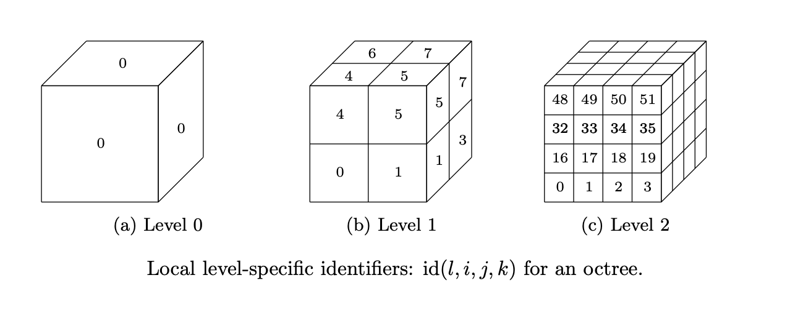
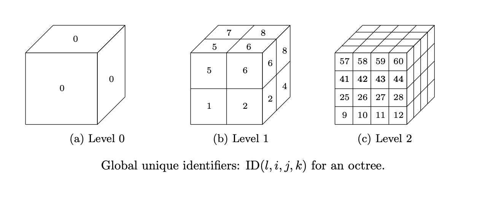
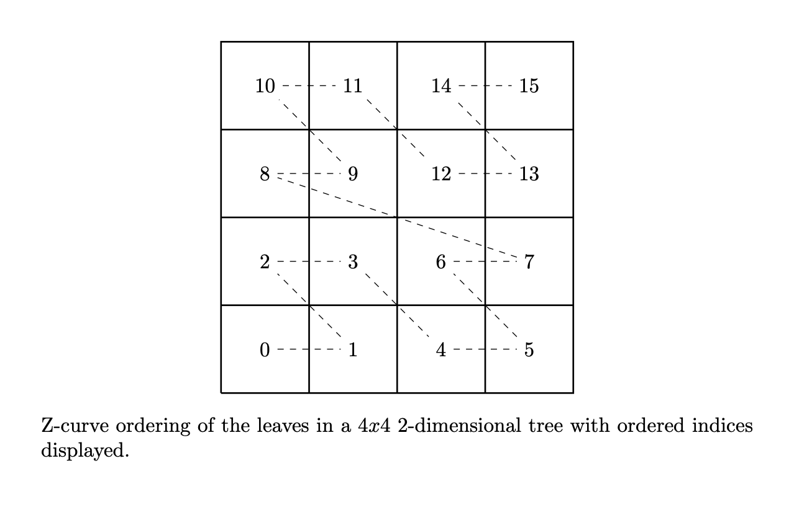

Trees
Introduction
A tree is an abstract hierarchical data type that connects nodes via edges. Each node in a tree is connected to a single parent node with the exception of the root node, which has no parent. Additionally, each node may be connected to multiple child nodes. In DGTile, we use a binary tree, a quadtree, and an octree to enable mesh adaptivity in one, two, and three spatial dimensions, respectively. In a binary tree, quadtree, and octree each internal node is connected to exactly two, four, and eight child nodes, respectively. In contrast, a leaf node is any node in the tree that contains no children. The level of a node in the tree is its distance away from the rood node, where the distance is the number of edges along the shortest path between two nodes. The root node in a tree has a level of 0.
Uniquely Identifying Nodes in the Tree
For the purposes of identifying, storing, modifying, and computing adjacencies of leaves in the tree, it is useful to assign unique identifiers to every possible node in the tree at every possible level. These identifiers are computed using simple integer arithmetic. At every potential level \(l\) in the octree, we can assign a level-specific identifier \(\text{id}(l,i,j,k)\) to a potential node in the tree given the node’s ijk Cartesian grid location at that level. Presently, we consider the following choice for the level-specific identifier
where identifiers are strided the quickest along the x-axis and slowest along the z-axis. Note that for a two-dimensional quadtree k will always be 0 and likewise, for a one-dimensional binary tree k and j will always be 0.
{kind=link}
The figure above illustrates level-specific identifiers for levels \(l=0,1,2\) for an octree, where the x-axis extends from the left to right of the page, the y-axis extends from out to into the page, and the z-axis extends from bottom to top of the page. This convention will be used in subsequent figures as well. For compatibility with C++, all indices start from 0.
A unique identifier for each node can then be found by computing a level-specific offset \(\delta(d,l)\) that denotes the total number of potential nodes in the tree up to the current level \(l\). Here \(d=1,2,3\) denotes the spatial dimension of the mesh. This offset is computed as
and the resultant unique node identifier in the octree is specified as the sum of the offset \(\delta(d,l)\) and the level-specific identifier \(\text{id}(l,i,j,k)\):
The figure below illustrates unique identifiers \(\text{ID}\) for levels \(l=0,1,2\) for an octree.
{kind=link}
Tree Representation
Once the leaves in the tree are known, the tree itself is simply stored as the unique global identifiers \(\text{ID}_i, i = 1,2,\dots,n_{lf}\), for each of the \(n_{lf}\) leaves in the tree. That’s it! Concretely, the C++ data structure used to store the global leaf identifiers is a \(\texttt{std::unordered_set<std::uin64_t>}\) so that the look-up of identifiers is, on average, \(\mathcal{O}(1)\) and the global identifiers are stored with the type \(\texttt{std::uint64_t}\) so that nodes at higher levels \(l\) may be represented without integer overflow.
Z-Curve Ordering
For the purpose of information locality in a distributed memory context, it is useful to order the leaves using a space filling curve. That is to say, we would like each MPI rank to contain data associated with leaves that are relatively close to one another in a spatial sense. This is known to reduce the wall-time associated with the transfer of data from adjacent leaves in an MPI context. Presently, we consider a Z-curve ordering of the leaves in the tree. The figure below illustrates an example Z-curve ordering of the leaves for a two-dimensional mesh.
{kind=link}
The pseudo-code below illustrates how a z-curve ordering of an arbitrary tree is obtained recursively, starting from the root global id \(0\).
function recursively_order
inputs <- global_id, leaves
output <- zleaves
if (global_id is in leaves)
zleaves.append(global_id)
return
end if
if (level(global_id) == max_level(leaves))
return
end if
for child(global_id) in global_id
recursively_order(child(global_id), leaves)
end for
end function
Extensions to other types of space-filling curves, such as a Hilbert curve, could be considered in the future.
Leaf Adjacencies
For the purposes of physics-based simulations, it is necessary to have knowledge of the adjacenct leaves to a given leaf. This allows physics specific information to be transferred from one leaf to another. Presently, DGTile considers only leaf adjacencies through a bridge dimension of \(d-1\). Alternatively stated, DGTile only considers face adjacencies for a given leaf. This is simply a choice that reduces the overhead of transfer from one block to another while still meeting the needs of applications that DGTile supports. Extensions to support full leaf adjacency information could be considered in the future.
For each leaf, a variable sized container of adjacencies can be computed and stored based on the underlying tree structure. Each individual adjacency is represented with the following data structure:
struct Adjacenct {
ID neighbor;
int axis;
int direction;
int kind;
int which_child;
}
where neighbor represents the global unique identifier \(\text{ID}(l,i,j,k)\) of the adjacent leaf, the combination of axis (\(=x,y,z\)) and direction (left/right) uniquely determines the direction of the adjacent leaf with respect to the current leaf, kind = (equal, coarse to fine, fine to coarse) represents the kind of interface that the adjacency represents, and which_child represents two things in different contexts. In the case of a coarse to fine adjacency, the variable which_child represents the child index of the current leaf with respect to its parent. In the case of a fine to coarse adjacency, the variable which_child represents the child index of the current leaf that would be adjacent to the adjacent leaf if that child actually existed in the tree.